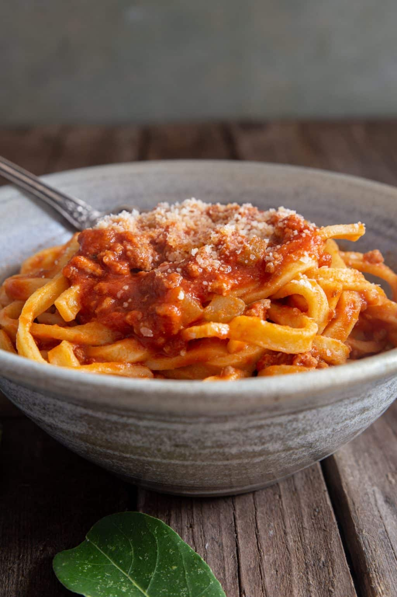

Bolognese Souce Pasta

Authentic Bolognese Souce, or Ragu alla Bolognese, a taste of Italy
This delicious Authentic Bolognese Sauce or Ragu alla Bolognese is made with fresh ingredients and cooked low and slow.
A true Bolognese sauce recipe takes time, but it is so worth it.
For the true Italian tradition serve with fresh egg Tagliatelle or Pappardelle!
Ingredients
- Extra Vergin Olive oil
- Carrot
- Celery
- Onion
- Ground Beef
- Bacon
- Red Wine
- Tomato Puree
- Salt
- Pepper
Steps
- Start by chopping finely the bacon
- Then in a medium to large pot add the olive oil and the bacon and leave it at low heat
- Now chop the carrot, celery and onion very finely,
but not too fine that it turns into a pulp.
- Add the vegetables to the bacon and let it cook until the onion is transparent
- Raise the heat to medium and add the ground beef and pork,
stirring and breaking up the meat as it cooks and browns.
- Raise the heat to high and add the red wine and cook until the wine has evaporated.
The liquid should evaporate without burning the meat or veggies.
- Lower the heat to medium and add the Tomato Puree
- Add salt and pepper
- Bring the souce to a boil stirring from time to time
- Then lower the heat to the minimum, cover the pot but leaving a slight opening.
- Now let the souce cook for 2 to 3 hours, stirring occasionally
- Serve over cooked pasta